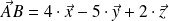
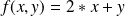

Écriture et appel de fonctions
Écriture et appel de fonctions simples.
Question
Écrire une fonction qui reçoit en argument un vecteur sous forme de liste avec ses composantes cartésiennes et qui renvoie la norme de ce vecteur.
Solution
1
def norme(V):
2
'''renvoie la norme du vecteur V.3
V est une liste de 3 flottants correspondant à ses composantes cartésiennes.'''4
return (pow(sum([pow(comp, 2) for comp in V]), 0.5))
J'ai réutilisé les éléments vus sur les listes.
Question
Utiliser cette fonction pour déterminer le vecteur directeur unitaire de la droite (AB) telle que  .
Solution
1
V_AB = [4, -5, 2]
2
norme_V_AB = norme(V_AB)
3
u = [V_AB_comp / norme_V_AB for V_AB_comp in V_AB]
Question
Que signifie la ligne de code suivante.
1
f = lambda x, y : 2 * x + y
Solution
Cela permet de générer sur une seule ligne la fonction  .